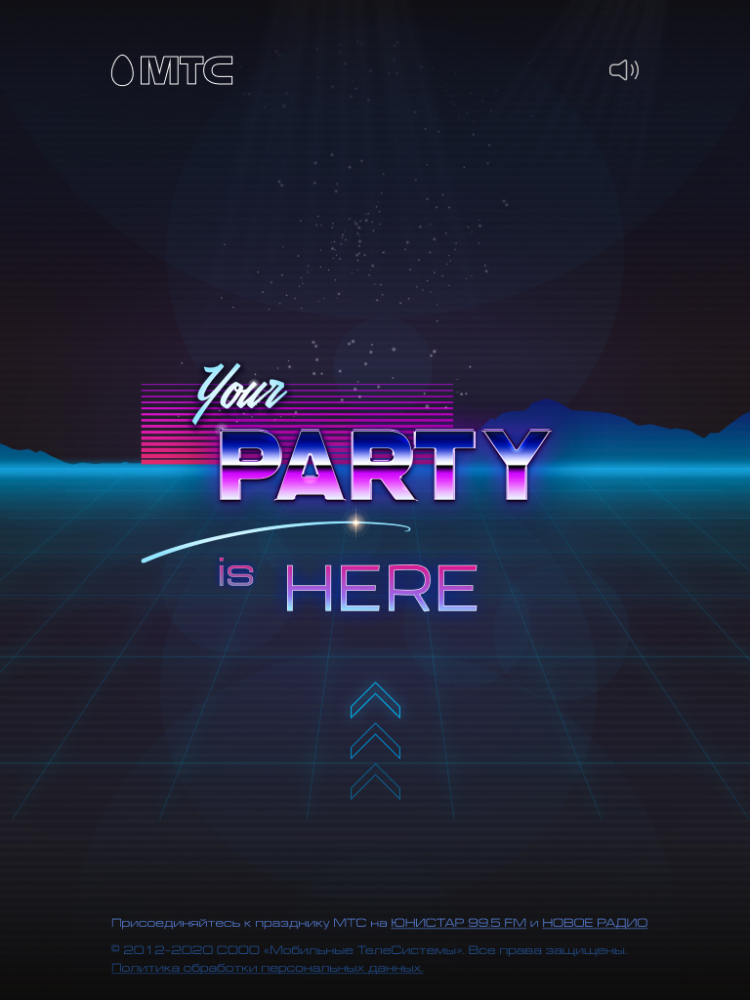
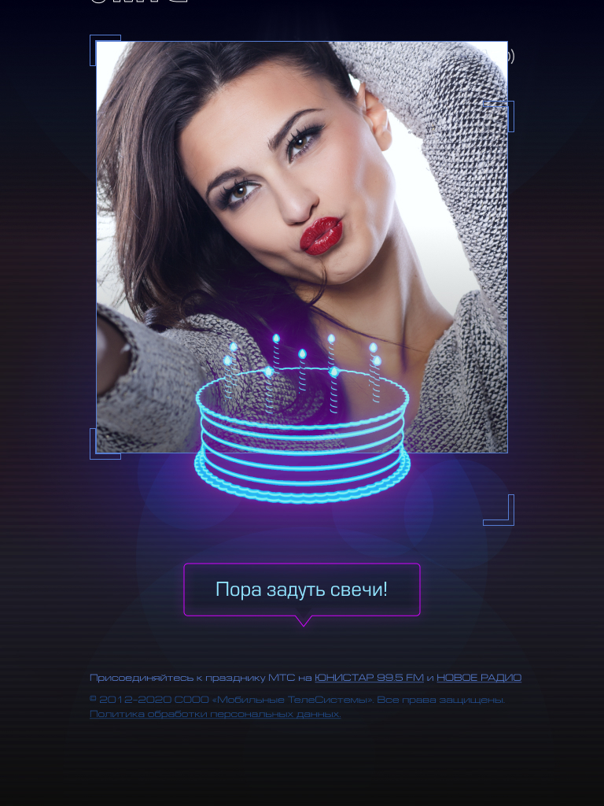
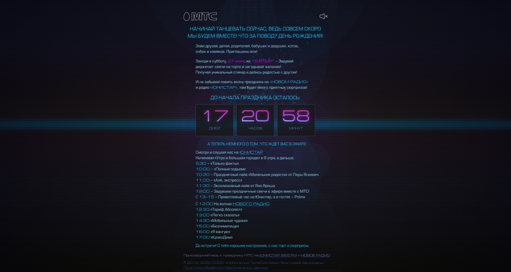

Международный автомобильный холдинг „Атлант-М“ торгует 10 автомобильными марками, в том числе Volkswagen. Для данного бренда нужно было разработать конструктор автомобилей по образцу немецкого проекта.
Разработка промо-проекта
Задачей проекта являлась разработка промо-проекта в соответствии с брифом заказчика. Проект должен был включать в себя вебсайт и телеграм-бот для создания и отправки стикеров пользователю в телеграм
Планируем архитектуру проекта
Упрощенно механика работы проекта выглядит так
Планируем дорожную карту
Поскольку проект был нетиповым и на старте проекта было большое количество неизвестных было принято решение работать по гибкой методологии. Первичный план, без этапов согласования и правок, содержал 9 этапов. Примерная разбивка этапов была такой:
1-й этап
Подготовка прототипов и технического задания
2-й этап
Разработка макетов страниц и письма рассылки
3-й этап
Подготовка видео с поздравлениями
4-й этап
HTML верстка макетов страниц
5-й этап
HTML верстка макетов страниц
6-й этап
Программная реализация
7-й этап
Перенос открытки на сервер заказчика
8-й этап
Настройка и оптимизация рассылки на сервере заказчика
9-й этап
Настройка и оптимизация рассылки на сервере заказчика
Готовим техническое задание
Мы подготовили простотипы ключевых страниц, на основании которых собрали техническое задание.
Механику взаимодействия с телеграм-ботом проектировали на основании стандартных api методы из документации Telegram.
Разработка макетов дизайна
Макеты дизайна были отрисованы в соответствии с визуалом из клиентского брифа и доработаны в рамках нескольких итераций.



Разработка 3D модели
Для того чтобы кручение торта было более плавное решили заменить нарезку нескольких изображений на 3D модель.
Разработка тестовой версии проекта
Тестовая html/js версия продукта была разработана еще до начала работ по дизайну. Это позволило уже на старте проекта определить все узкие места и доработать общую концепцию для того чтобы механика проекта работала на бОльшем количестве устройств пользователей.
Таким образом на старте вылезили проблемы с сохранением файла, объемом файла, передачей файла скрипту телеграм бота и показом всплывающих окон в IOS.
Разработка и интеграция телеграм бота
Механику работы телеграм бота реализовали на стандартных методах Телеграм. Для передачи изображения боту использовали ссылку на предварительно сохраненное изображение закодированную в формат BASE64.
После получения изображения бот создавал стикерпак с одним стикером и передавал его пользователю.
Для каждого пользователя генерировалось уникальное имя файла и в связке с id чата это позволило передавать каждому юзеру именно его стикер. После отправки стикера ботом картинка с сервера удалялась.
Для каждого пользователя генерировалось уникальное имя файла и в связке с id чата это позволило передавать каждому юзеру именно его стикер. После отправки стикера ботом картинка с сервера удалялась.
Сборка механики открытки на тестовом сервере
Механику работы телеграм бота реализовали на стандартных методах Телеграм. Для передачи изображения боту использовали ссылку на предварительно сохраненное изображение закодированную в формат BASE64.После получения изображения бот создавал стикерпак с одним стикером и передавал его пользователю.Для каждого пользователя генерировалось уникальное имя файла и в связке с id чата это позволило передавать каждому юзеру именно его стикер. После отправки стикера ботом картинка с сервера удалялась.
Подготовка заглушки
По сценарию механика открытки должна стать доступна пользователю в 00:00 27 июня. Для этого на период до указанного времени была подготовлена заглушка с контентом о предстоящем празднике. После наступления указанног овремени заглушка автоматически подменялась на открытку.

Отзыв клиента

Команда проекта
Руководитель проекта
Павел Бокач
Дизайн, UX
Влад Шевер
Дмитрий Хоружко
Команда клиента
Иван Кривонос
Екатерина Лазицкая
Ведущий разработчик
Грины
Верстка
Филип Бурш